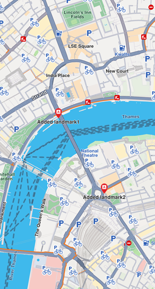

Display Landmarks¶
Learn how to filter, add, customize, and highlight landmarks on your map.
Filter Landmarks by Category¶
When displaying the map, you can choose what types of landmarks to display. Each landmark can have one or more LandmarkCategory. To selectively display specific categories of landmarks, use the addStoreCategoryId method:
// Clear all the landmark types on the map
mapController.preferences.lmks.clear();
// Display only gas stations
mapController.preferences.lmks.addStoreCategoryId(
GenericCategories.landmarkStoreId, GenericCategoriesId.gasStation.id);This allows filtering the default map data.
Add Custom Landmarks¶
Landmarks are added to the map by storing them in a LandmarkStore. The LandmarkStore is then added to the LandmarkStoreCollection within MapViewPreferences.
The following code creates custom landmarks, adds them to a store, and adds the store to the collection:
final List<Landmark> landmarksToAdd = [];
final Img imageData = await Img.fromAsset('assets/poi83.png');
final landmark1 = Landmark();
landmark1.name = "Added landmark1";
landmark1.coordinates = Coordinates(latitude: 51.509865, longitude: -0.118092);
landmark1.img = imageData;
landmarksToAdd.add(landmark1);
final landmark2 = Landmark();
landmark2.name = "Added landmark2";
landmark2.coordinates = Coordinates(latitude: 51.505165, longitude: -0.112992);
landmark2.img = imageData;
landmarksToAdd.add(landmark2);
final landmarkStore = LandmarkStoreService.createLandmarkStore('landmarks');
for (final lmk in landmarksToAdd) {
landmarkStore.addLandmark(lmk);
}
mapController.preferences.lmks.add(landmarkStore);
Landmarks displayed
LandmarkStoreCollection methods¶
The LandmarkStoreCollection class provides the following methods:
add(LandmarkStore lms)- Adds a new store to be displayed on the map. All landmarks from the store are displayed, regardless of category.addAllStoreCategories(int storeId)- Same asaddbut uses thestoreIdinstead of theLandmarkStoreinstance.addStoreCategoryId(int storeId, int categoryId)- Adds landmarks with the specified category from the landmark store.clear()- Removes all landmark stores from the map.contains(int storeId, int categoryId)- Checks if the specified category ID from the store ID was already added.containsLandmarkStore(LandmarkStore lms)- Checks if the specified store has any categories shown on the map.
Highlight Landmarks¶
Highlights allow you to customize landmarks, making them more visible and providing render settings options. By default, highlighted landmarks are not selectable but can be made selectable if necessary.
Highlighting a landmark allows you to:
- Customize its appearance
- Temporarily isolate it from standard interactions (default behavior, can be modified)
💡 Tip: Landmarks retrieved through search can be highlighted to enhance their prominence and customize their appearance. Custom landmarks can also be highlighted, but must be added to a
LandmarkStorefirst.
Activate highlights¶
Highlights are displayed on the map using GemMapController.activateHighlight. Create a Landmark object, add it to a List<Landmarks>, and provide HighlightRenderSettings for customizations. Then call activateHighlight with a unique highlightId.
final List<Landmark> landmarksToHighlight = [];
final Img imageData = await Img.fromAsset('assets/poi83.png');
final landmark = Landmark();
landmark.name = "New Landmark";
landmark.coordinates = Coordinates(latitude: 52.48209, longitude: -2.48888);
landmark.img = imageData;
landmark.extraImg = imageData;
landmarksToHighlight.add(landmark);
final settings = HighlightRenderSettings(imgSz: 50, textSz: 10, options: {
HighlightOptions.noFading,
HighlightOptions.overlap,
});
final lmkStore = LandmarkStoreService.createLandmarkStore('landmarks');
lmkStore.addLandmark(landmark);
controller.preferences.lmks.add(lmkStore);
mapController.activateHighlight(
landmarksToHighlight,
renderSettings: settings,
highlightId: 2,
);
mapController.centerOnCoordinates(Coordinates(latitude: 52.48209, longitude: -2.48888), zoomLevel: 40);Highlight options¶
The HighlightOptions enum provides options to customize highlighted landmark behavior:
| Option | Description |
|---|---|
showLandmark |
Shows the landmark icon and text. Enabled by default. |
showContour |
Shows the landmark contour area if available. Enabled by default. |
group |
Groups landmarks in close proximity. Available only with showLandmark. Disabled by default. |
overlap |
Overlaps highlight over existing map data. Available only with showLandmark. Disabled by default. |
noFading |
Disables highlight fading in/out. Available only with showLandmark. Disabled by default. |
bubble |
Displays highlights in a bubble with custom icon placement. Available only with showLandmark. Automatically invalidates group. Disabled by default. |
selectable |
Makes highlights selectable using setCursorScreenPosition. Available only with showLandmark. |
🚨 Alert: When showing bubble highlights, if the whole bubble does not fit on the screen, it will not be displayed at all. Make sure to truncate the text if the text length is very long.
🚨 Alert: For a landmark contour to be displayed, the landmark must have a valid contour area. Landmarks with a polygon representation on OpenStreetMap will have a contour area. Make sure the contour geographic related fields from the
extraInfoproperty of theLandmarkare not removed or altered.
Deactivate highlights¶
To remove a highlighted landmark from the map, use GemMapController.deactivateHighlight(id) to remove a specific landmark, orGemMapController.deactivateAllHighlights() to clear all highlighted landmarks.
mapController.deactivateHighlight(highlightId: 2);Get highlighted landmarks¶
To retrieve highlighted landmarks based on a highlight ID:
List<Landmark> landmarks = mapController.getHighlight(2);💡 Tip: Overlay items can also be highlighted using the
activateHighlightOverlayItemsmethod in a similar way.
Remove landmarks¶
To remove all landmarks from the map, call the removeAllStoreCategories(GenericCategories.landmarkStoreId) method:
mapController.preferences.lmks
.removeAllStoreCategories(GenericCategories.landmarkStoreId);